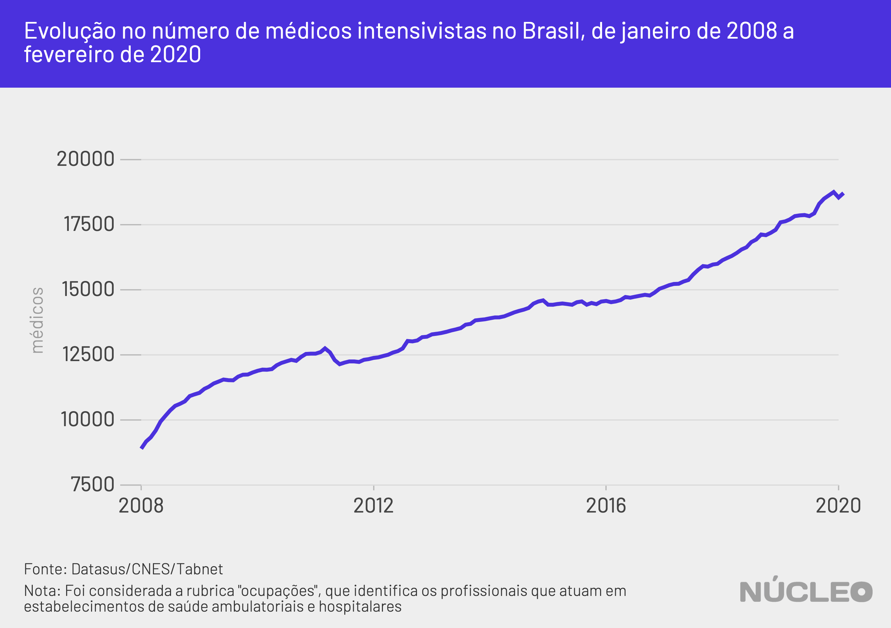

À medida que o coronavírus se espalha pelo Brasil e coloca pressão sobre a capacidade do sistema de saúde, o número de médicos especializados em tratamento intensivo nas UTIs brasileiras pode ser insuficiente para dar conta da demanda por emergência, agravando a situação de falta de leitos e respiradores disponíveis.
O Brasil possui 18.716 profissionais com capacitação de terapia intensiva em atividade em ambulatórios e hospitais, segundo dados de fevereiro deste ano. O número é mais do que o dobro de 12 anos atrás, de acordo com levantamento do Núcleo com dados do Cadastro Nacional de Estabelecimentos de Saúde (CNES).
Para Cristiano Franke, médico intensivista do Hospital de Pronto Socorro de Porto Alegre e membro da Associação de Medicina Intensiva Brasileira (AMIB), esse número de profissionais não é suficiente para um cenário de crise que o país enfrenta pela epidemia de coronavírus.
É importante porque…
-
A epidemia de coronavírus deve testar limites do sistema de saúde brasileiro
-
Caso a epidemia se espalhe, podem faltar médicos especializados em UTI
Acesse aqui dados em tempo real sobre a pandemia - via Johns Hopkins University
Um médico intensivista pode cuidar, em seu turno, de no máximo 10 pacientes, número que pode cair dependendo da complexidade da situação.
O Brasil tinha cerca de 3.000 casos confirmados de COVID-19 até a tarde do dia 26 de março. Uma projeção da Agência Brasileira de Inteligência (ABIN), revelada pelo site Intercept, mostrou que o contágio pode chegar a 35 mil brasileiros ao fim de março. Ainda há subnotificação de diagnósticos por falta de testes, então o número deve ser muito maior.

“Numa situação de desastre, catástrofe – e uma pandemia é uma situação dessas, em que se demanda maior necessidade de recursos do que a gente tem a ofertar – no Brasil não há profissionais de terapia intensiva para cuidar de todos os doentes”, disse o especialista.
Segundo Franke, que é coordenador do Curso de Fundamentos de Gerenciamento de Desastres da Amib, existe a possibilidade de se “arrecadar” profissionais de outras áreas para ficarem sob supervisão de médicos intensivistas, algo que ele disse que já começou a acontecer em hospitais maiores.
Uma UTI conta com a colaboração de diversas categorias de serviço de saúde, incluindo, além de médicos e enfermeiros, fisioterapeutas, profissionais de apoio psicológico e nutricionistas, acrescentou Franke. “Várias especialidades são importante nessa situação de catástrofe.” O número de enfermeiros intensivistas cadastrados no CNES cresceu apenas 16% desde 2008, para 2.815 profissionais.
“Faltam profissionais de terapia intensiva para cobrir com o cuidado adequado os pacientes críticos”.
- Cristiano Franke, médico e coordenador do Curso de Fundamentos de Gerenciamento de Desastres da Amib
A possível falta de médicos intensivistas no Brasil em meio à epidemia de coronavírus se soma à também possível carência de leitos para até 42 mil brasileiros, segundo um estudo. Além disso, o Brasil perdeu quase 50 mil leitos de internação hospitalar regular desde 2007.
“Em nosso país, os leitos de UTI são insuficientes para a demanda de uma pandemia e, ainda mais preocupante, apresentam-se distribuídos de forma irregular, deixando grande parte da população nacional sem a menor chance de ter acesso à assistência devida”, disse a AMIB em nota datada de 25 de março, após pronunciamento do presidente Jair Bolsonaro.
O Ministro da Saúde, Luiz Henrique Mandetta, previu para o fim de abril um colapso no sistema de saúde do Brasil, sendo depois desmentido por Bolsonaro.
METODOLOGIA
O Núcleo recorreu a dados do Ministério da Saúde, no sistema Tabnet, do Datasus. Foram analisados dados agregados para todo o país do Cadastro Nacional de Estabelecimentos de Saúde (CNES) relativos a:
- CNES - RECURSOS HUMANOS - OCUPAÇÕES - SEGUNDO CBO 2002 - BRASIL.
Segundo notas metodológicas, essa tabela “identifica os profissionais que atuam em estabelecimentos de saúde ambulatoriais e hospitalares.” Dados sob a rubrica “Profissinais” estavam subdimensionados.